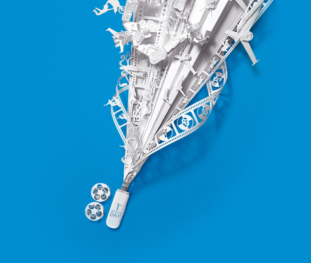
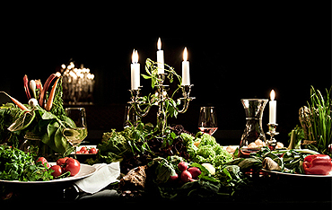

Selamat Datang di web smkn 2 batam
Video SMKN 2 BATAM
Kabar Sekolah
Oleh AdministratorSEMANGAT BELAJAR MENGHADAPI UJIAN SEKOLAH Terbit pada tanggal 2 mei 2022 | 5 KomentarBaca selengkapnya...
 Oleh AdministratorCLASS MEETING Terbit pada tanggal 28 Januari 2022 | 12 KomentarAsslamualaikum kawan.. Tak terasa sudah mau bagi rapot dan class meeting sekolah kita yang seru sudah berakhir. Ini dia hasil pertandingan antar kelas (class meeting) SMKN 2 BATAM. Selamat ya untuk kawan-kawan yang sudah menang :) FUTSAL PUTRA Juara 1 : XII...Baca selengkapnya...
 Oleh AdministratorSELAMAT DATANG WEBSITE RESMI SMKN 1 BERAU Terbit pada tanggal 10 Desember 2021 | 3 KomentarKami keluarga besar SMKN 2 Berau turut berbahagia atas launchingnya website sekolah kami yang dapat diakses langsung pada http://smkn2batam.sch.id Semoga website ini kedepannya dapat membantu banyak hal terutama dalam penyampaian informasi kepada siswa, guru, maupun warga di luar sekolah. Website ini dibuat sebagai media komunikasi dan kepek...Baca selengkapnya...
 NURSYA'BANI, M.Pd
Kepala Sekolah
NURSYA'BANI, M.Pd
Kepala Sekolah
Assalamu'alaikum wr.wb.
Dalam era globalisasi ini layanan informasi yang cepat dan akurat menjadi kebutuhan masyarakat modern. Informasi yang terdistribusi secara efektif diyakini menjadi penggerak partisipasi seluruh warga terutama pemangku kepentingan (stakeholders) untuk mendukung program, mewujudkan harmoni antarsesama warga sekolah, membuka kran komunikasi dan tentu saja merupakan media publikasi keunggulan sekolah kepada masyarakat.
Web SMKN 2 BATAM hadir sebagai media komunikasi dan informasi untuk seluruh stakeholders dan masyarakat luas. Pengelolaan web ini berada di bawah kendali Mahakam Tim Samarinda. Meski demikian, untuk up-date data dan informasi diperlukan kerja sama sinergis dengan seluruh bidang dan unit di lingkungan SMKN 2 BATAM.
Untuk sementara, menu yang tersedia masih terbatas. Akan tetapi ke depan akan senantiasa dikembangkan sesuai dengan dinamisasi dan kebutuhan yang relevan. Selamat datang dan selamat berkunjung di web SMKN 2 BATAM. Silakan kontak kami untuk memberikan masukan dalam rangka mewujudkan SMKN 2 BATAM sebagai sekolah yang Insya Allah penuh berkah-rahmat-hidayah, nyaman dan menyejukkan, religius, serta unggul dalam IPTEK.
Wassalamuala'ikum wr.wb.